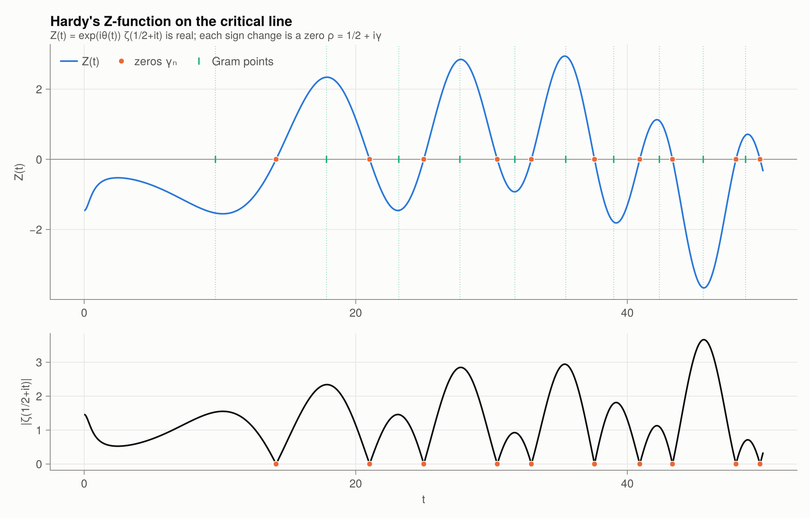

Getting started
Installation
Riemannian is not registered. Install it from GitHub:
using Pkg
Pkg.add(url = "https://github.com/geekymode/Riemannian.jl")
Pkg.add("CairoMakie") # optional, for plotsOr, from a local clone:
] dev /path/to/Riemannian.jlJulia ≥ 1.10 is required, because plotting is implemented as a package extension.
A first session
using Riemannian
explain()Topics (in reading order):
explain(:primes)
explain(:euler_product)
explain(:zeta)
explain(:analytic_continuation)
explain(:functional_equation)
explain(:trivial_zeros)
explain(:nontrivial_zeros)
explain(:explicit_formula)
explain(:random_matrices)
explain(:equivalents)
explain(:breakthroughs)explain(:trivial_zeros)TRIVIAL ZEROS: s = −2, −4, −6, …
In ζ(s) = χ(s) ζ(1−s), for s = −2n (n ≥ 1) the factor sin(πs/2) = sin(−nπ) = 0, while
Γ(1−s) and ζ(1−s) are finite and nonzero. Hence ζ(−2n) = 0. At s = 0, −1, −3, … the
sine is nonzero, and ζ(−n) = (−1)ⁿ Bₙ₊₁/(n+1): ζ(0) = −1/2, ζ(−1) = −1/12, ζ(−3) = 1/120.
In the completed Λ(s) these zeros are cancelled by the poles of Γ(s/2): they are
"trivial" because they come from the Gamma factor, not from the primes.
For s < 0, |ζ(s)| grows factorially between trivial zeros (Γ(1−s) factor).
Try: trivial_zeros(5), zeta(-4.0), zeta(-3.0), zeta_negint_exact(3)
plot_zeta_real()Evaluate ζ anywhere in the complex plane:
zeta(2), π^2 / 6(1.6449340668482264, 1.6449340668482264)zeta(-1) # the "−1/12"-0.08333333333333333zeta(0.5 + 14.134725141734693im) # first nontrivial zero2.1688672404552633e-16 - 1.175195447523615e-16imCompute zeros and verify that they lie on the critical line:
nontrivial_zeros(5)5-element Vector{Float64}:
14.134725141734695
21.02203963877155
25.010857580145686
30.42487612585952
32.935061587739185check_zeros(500)(T = 500, sign_changes = 269, N_T = 269, all_on_line = true)Plotting
using CairoMakie
set_theme!(riemann_theme())
plot_critical_line(tmax = 50)
Every plot_* function returns a Makie.Figure, so you can save it or modify it:
fig = plot_zeta_spiral()
save("spiral.png", fig; px_per_unit = 2)To render every figure at once:
gallery("figures") # 21 PNGs
gallery("figures"; quick = true) # lower resolution, fasterHigh precision
All the core ζ machinery is generic in the floating-point type:
setprecision(BigFloat, 200) do
γ₁ = parse(BigFloat, "14.134725141734693790457251983562470270784257115699")
abs(zeta(complex(big"0.5", γ₁)))
end1.9287733212743743573877889246742137827371695933793679476503649e-49Performance notes
zeta(s)costs $O(|s|)$ operations (Euler–Maclaurin). Near $t \sim 10^3$ it takes about 5 µs.nontrivial_zeros(n)caches its results. The first 5000 zeros take about 3 s.riemann_siegel_Zcosts $O(\sqrt{t})$ and is the way to go at large heights.- The heaviest plots are
plot_heat_flow(BigFloat integrals, about 12 s) andplot_spacing_distribution.